This package was written when the author was a placement student at ZIB Berlin.
20.61.1 Introduction
This package is an implementation of a new algorithm proposed by D. J. Jeffrey and
A. D. Rich [JR94] to remove "spurious" discontinuities from integrals. Their paper
focuses on the Weierstraß substitution, u =tan(x∕2), currently used in conjunction with
the Risch algorithm in most computer algebra systems to evaluate trigonometric
integrals. Expressions obtained using this substitution sometimes contain discontinuities,
which limit the domain over which the expression is correct. The algorithm presented
finds a better expression, in the sense that it is continous on wider intervals whilst still
being an anti derivative of the integrand.
20.61.1.1 Example
Consider the following problem:
∫
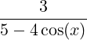
dx
REDUCE computes an anti derivative to the given function using the Weierstraß
substitution u =tan(
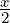
), and then the Risch algorithm is used, returning:
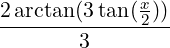
,
which is discontinuous at all odd multiples of π. Yet our original function is continuous
everywhere on the real line, and so by the Fundamental Theorem of Calculus, any
anti-derivative should also be everywhere continuous. The problem arises from the
substitution used to transform the given trigonometric function to a rational function:
often, the substituted function is discontinuous, and spurious discontinuities are
introduced as a result.
Jeffery and Richs’ algorithm returns the following to the given problem:
∫
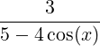
dx = 2arctan
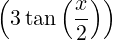
+ 2π
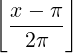
which differs from (2) by the constant 2π, and this is the correct way of removing the
discontinuity.
20.61.2 Statement of the Algorithm
We define a Weierstraß substitution to be one that uses a function u = Φ(x) appearing in
the following table:
Choice
Φ(x)
sin(x)
cos(x)
dx
b
p
(a)
tan(x∕2)
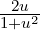
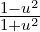
π
2π
(b)
tan(
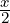
+
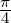
)
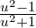
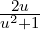
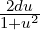
2π
(c)
cot(x∕2)
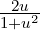
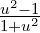
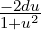
0
2π
(d)
tan(x)
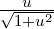
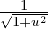
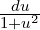
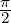
π
Table 20.19:Functions u = Φ used in the Weierstraß Alg. and their corresponding
substitutions
There are of course, other trigonometric substitutions, used by REDUCE, such as sin
and cos, but since these are never singular, they cannot lead to problems with
discontinuities.
Given an integrable function f(sinx,cosx) whose indefinite integral is required, select
one of the substitutions listed in the table. The choice is based on the following
heuristics: choice (a) is used for integrands not containing sinx, choice (b) for integrands
not containing cosx; (c) is useful in cases when (a) gives an integral that cannot be
evaluated by REDUCE, and (d) is good for conditions described in Gradshteyn and
Ryzhik (1979, sect 2.50). The integral is then transformed using the entries in the table,;
for example, with choice (c), we have:
∫f(sinx,cosx)dx =∫f
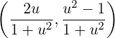
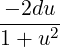
.
The integral in u is now evaluated using the standard routines of the system, then u is
substituted for. Call the result ĝ(x). Next we calculate
K =limx→b−ĝ(x) −limx→b+ĝ(x),
where the point b is given in the table. the corrected integral is then
g(x) =∫f(sinx,cosx)dx =ĝ(x) + K
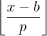
,
where the period p is taken from the table, and ⌊x⌋ is the floor function.
20.61.3 REDUCE implementation
The name of the function used in REDUCE to implement these ideas is trigint, which
has the following syntax:
trigint(⟨exp⟩, ⟨var⟩)
where ⟨exp⟩ is the expression to be integrated, and ⟨var⟩ is the variable of integration.
If trigint is used to calculate the integrals of trigonometric functions for which no
substitution is necessary, then non standard results may occur. For example, if we
calculate trigint(cos(x), x), we obtain
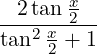
which, by using simple trigonometric identities, simplifies to:
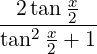
→
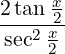
→ 2sin
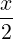
cos
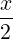
→sin
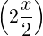
→sinx,
which is the answer we would normally expect. In the absence of a normal form for
trigonometric functions though, both answers are equally valid, although most would
prefer the simpler answer sinx. Thus, some interesting trigonometric identities could be
derived from the program if one so wished.
20.61.3.1 Examples
Using our example in (1), we compute the corrected result, and show a few other
examples as well:
REDUCE Development Version, 4-Nov-96 ...
1: trigint(3/(5-4*cos(x)),x);
x - pi + x
2*(atan(3*tan(---)) + floor(-----------)*pi)
2 2*pi
2: trigint(3/(5+4*sin(x)),x);
pi + 2*x
2*(atan(3*tan(----------))
4
- pi + 2*x
+ floor(-------------)*pi)
4*pi
3: trigint(15/(cos(x)*(5-4*cos(x))),x);
x - pi + x
8*atan(3*tan(---)) + 8*floor(-----------)*pi
2 2*pi
x x
- 3*log(tan(---) - 1) + 3*log(tan(---) + 1)
2 2
20.61.4 Definite Integration
The corrected expressions can now be used to calculate some definite integrals, provided
the region of integration lies between adjacent singularities. For example, using our
earlier function, we can use the corrected primitive to calculate
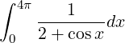
(20.91)
trigint returns the answer below to give an indefinite integral, F(x):
x
tan(---)
2 - pi + x
2*sqrt(3)*(atan(----------) + floor(-----------)*pi)
sqrt(3) 2*pi
------------------------------------------------------
3
And now, we can apply the Fundamental Theorem of Calculus to give
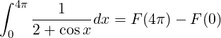
(20.92)
sub(x=4*pi,F)-sub(x=0,F);
4*sqrt(3)*pi
-----------------
3
and this is the correct value of the definite integral. Note that although the expression in
(*) is continuous, the functions value at the points x = π,3π etc. must be intepreted as a
limit, and these values cannot substituted directly into the formula given in (*).
Hence care should be taken to ensure that the definite integral is well defined,
and that singularities are dealt with appropriately. For more details of this in
REDUCE, please see the documentation for the cwi addition to the DEFINT
package.
20.61.5 Tracing the trigint function
The package includes a facility to trace in some detail the inner workings of
the trigint program. Messages are given at key points of the algorithm,
together with the results obtained. These messages are displayed whenever the
switch tracetrig is on, which is done in REDUCE with the command ontracetrig; This switch is off by default. In particular, the messages inform the user
which substitution is being tried, and the result of that substitution. The error
message
***** system cannot integrate after subs
means that REDUCE has tried all four of the Weierstraß substitutions, and the
system’s standard integrator is unable to integrate after the substitution has been
completed.
20.61.6 Bugs, comments, suggestions
This program was written whilst the author was a placement student at ZIB
Berlin.